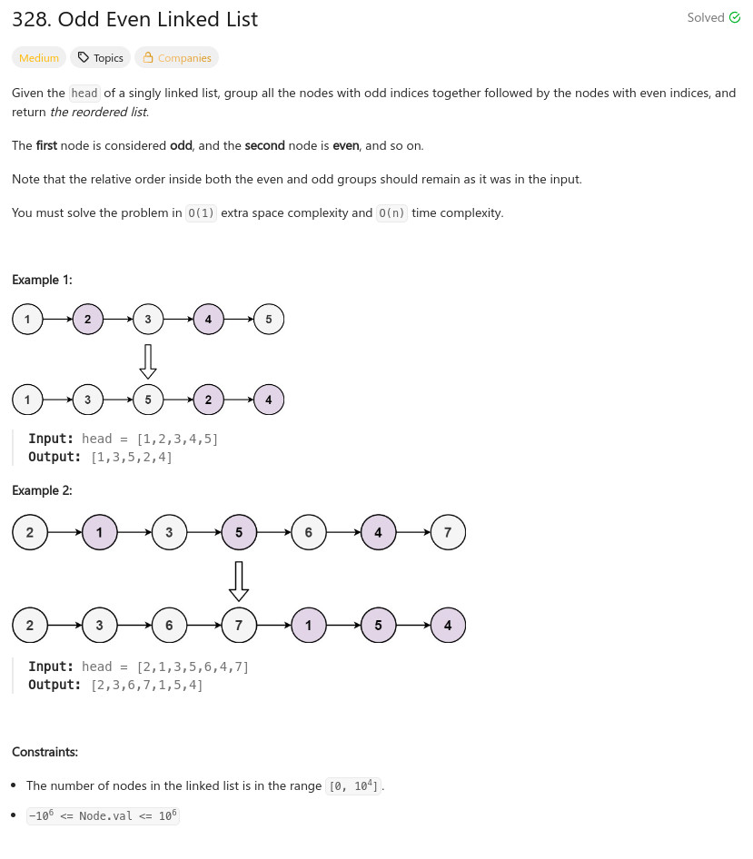

參考資訊：
https://www.cnblogs.com/grandyang/p/5138936.html
題目：

/**
* Definition for singly-linked list.
* struct ListNode {
* int val;
* ListNode *next;
* ListNode() : val(0), next(nullptr) {}
* ListNode(int x) : val(x), next(nullptr) {}
* ListNode(int x, ListNode *next) : val(x), next(next) {}
* };
*/
class Solution {
public:
ListNode* oddEvenList(ListNode* head) {
if (!head || !head->next) {
return head;
}
ListNode *odd = head;
ListNode *tmp = head->next;
ListNode *even = head->next;
while (odd->next && even->next){
odd->next = odd->next->next;
odd = odd->next;
even->next = even->next->next;
even = even->next;
}
odd->next = tmp;
return head;
}
};